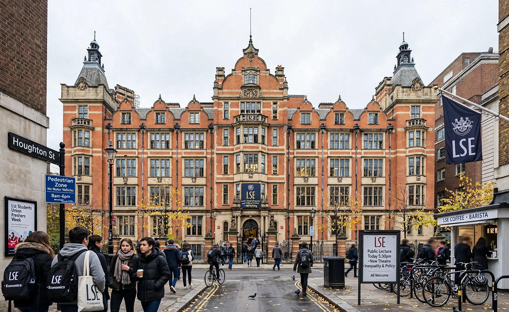

The London School of Economics and Political Science (LSE) is a public research university in Westminster, London, and a member institution of the University of London. Founded in 1895 by Fabian Society members Sidney and Beatrice Webb, Graham Wallas and George Bernard Shaw, it specialises in the social sciences.

LSE has produced many heads of state, Nobel laureates and influential economists including Friedrich Hayek and George Soros among alumni. It consistently ranks among the world's top universities for economics, politics, law, sociology and international relations.
Centred on Houghton Street near Aldwych, its library — the British Library of Political and Economic Science — is one of the largest social science libraries in the world. Notable past directors include William Beveridge and Ralf Dahrendorf.